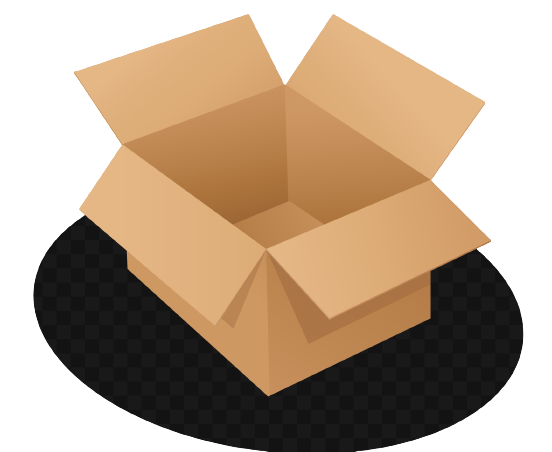

<div class="create-survey">
    <mat-card class="card">
        <mat-card-title>Questionnaires</mat-card-title>
        <mat-card-subtitle>Make your own choices.</mat-card-subtitle>
        <mat-divider [inset]="true"></mat-divider>
        <mat-card-actions style="text-align: center;">
            <button mat-stroked-button color="primary" (click)="openQuestionnaireDialog()">
                Add a Questionnaire
            </button>
        </mat-card-actions>
        <mat-card-content>
            <!--If questionnaires are empty-->
            <ng-container *ngIf="questionnaires.length===0">
                <div class="image-container">
                    
                    <p>Uh Oh! No questionnaires created.</p>
                </div>
            </ng-container>
            <!--If questionnaires are not empty-->
            <ng-container *ngIf="questionnaires.length!==0">
                <app-questionnaire-list [questionnaires]="questionnaires">
                </app-questionnaire-list>
            </ng-container>
        </mat-card-content>
    </mat-card>
</div>